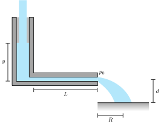

{% block MathJax %}
  <script src="https://polyfill.io/v3/polyfill.min.js?features=es6"></script>
  <script >
  MathJax = {
    tex: {
      tags: 'ams'  // should be 'ams', 'none', or 'all'
    }
  };
  </script>
  <script id="MathJax-script" async src="https://cdn.jsdelivr.net/npm/mathjax@3/es5/tex-chtml.js"></script>
  <Style>
      #mainmini {
      display: flex;
      border: 1px solid black;
    }
{% endblock %}


<div class = 'Ejercicio' >


<div class='enunciado'><div id='mainmini'>
<div style='position:relative;width:47%'>
 Una llave de agua suministra un caudal constante \(Q_a\) a un tubo capilar vertical de área \(A\). El agua fluye a través del tubo capilar por una tubería cilíndrica horizontal de radio \(R\) y largo \(L\), como se muestra en la figura. El caudal \(Q_c\) que sale por el capilar y el perfil de velocidades \(v(r)\) está dado por la Ley de Poiseuille como:
\begin{equation*} v(r) = \dfrac{\Delta p}{4 \eta L} \left( R^2 - r^2\right)\end{equation*}
donde la viscosidad del fluido es \(\eta\).
</div>
<div style='position:relative;width:50%'>



</div>
</div>

<ol type='a'>
<li> Determine la altura máxima en el capilar.
</li><li> Determine el máximo alcance horizontal \(R\) que sale por el capilar para una altura \(d\).
</li><li> Determine el tiempo \(t\) en función de la altura \(y\), considere que para \(t=0\) el capilar está vacío.
</li></ol>

</div><div class='solucion'>

<ol type='a'>

</li><li>  La altura máxima dentro del tubo vertical (\(y_{\text{max}}\)) se alcanza cuando el caudal de entrada es igual al de salida (\( Q_a = Q_c \)). Observe que siempre \( Q_c \leq Q_a \):

\begin{equation*}Q_a = \frac{\pi \Delta p R^4}{8 \eta L}\end{equation*}

donde:

\begin{align*}\Delta p &= \cancel{p_0} + \rho g y_{\text{max}} - \cancel{p_0} \\\Delta p &= \rho g y_{\text{max}}\\\Rightarrow Q_a &= \frac{\pi \rho g y_{\text{max} R^4} }{8 \eta L}\end{align*}

Entonces la altura máxima del capilar es igual a:
$$\bbox[yellow,10px, border: 2px solid red]{\begin{equation}y_{\text{max}} = \dfrac{8 Q_a \eta L}{\pi \rho g R^4}\end{equation}}$$

</li><li> La máxima velocidad de salida se obtiene para el centro de la tubería, \(v(r=0)=v_{\text{max}}\), cuya expresión es:
\begin{align*}v_{\text{max}} &= \frac{\Delta p}{4 \eta L}R^2 \\v_{\text{max}} (y) &= \frac{\rho g y}{4 \eta L}R^2\end{align*}

Luego, la velocidad máxima de \(v_{\text{max}}(y)\) se obtiene para \(y_{\text{max}}\):
\begin{equation*}v_{\text{max}} = v_{\text{max}}\left(y_{\text{max}}\right)\end{equation*}

Por otro lado, el tiempo de vuelo \(t_v\) (tiempo en que se mantiene en el aire el fluido que sale por la tubería horizontal), está dado por:
\begin{align*}d &= \frac{1}{2} g t_{\text{v}}^2 \\\Rightarrow t_{\text{v}} &= \sqrt{\frac{2d}{g}}\end{align*}

Como la componente horizontal de velocidad del flujo del agua a la salida no varía en el tiempo, se tiene que \( R_{\text{max}} \)

\begin{align*}R_{\text{max}} &= v_{\text{max}} \ t_{\text{v}}\\&= \frac{\rho g y_{\text{max}}}{4 \eta L} \ R^2\sqrt{\frac{2d}{g}}\end{align*}

Entonces \(R_{\text{max}}\) es igual a:

$$\bbox[yellow,10px, border: 2px solid red]{\begin{equation*} R_{\text{max}} = \dfrac{\rho \ y_{\text{max}} R^2}{4\eta L} \ \sqrt{2dg} = \dfrac{2 Q_a}{\pi R^2} \sqrt{\dfrac{2d}{g}}\end{equation*}}$$


</li><li> Se tiene que el balance de masa dentro de la tubería está dado por:

\begin{equation*}\frac{dV}{dt} = Q_a - Q_c\end{equation*}

donde
\begin{align*}V &= A \ y(t) \\\frac{dV}{dt} &= A \ \frac{dy}{dt}\\\Rightarrow A \ \frac{dy}{dt} &= Q_a - \frac{\pi \rho g y R^4}{8 \eta L}\end{align*}

Utilizando \(\beta = \frac{\pi \rho g R^4}{8 \eta L}\)

\begin{align*}A \ \frac{dy}{dt} &= Q_a - \beta y\\\Rightarrow dt &= A \ \frac{dy}{Q_a - \beta y} \\\int_{0}^{t} dt &= A\int_{0}^{y} \frac{dy}{Q_a - \beta y}\\\Rightarrow t &= \frac{A}{\beta} \ \ln\left( \frac{Q_a}{Q_a-\beta y} \right)\end{align*}

Reemplazando \(\beta\) se tiene que el tiempo \(t\) equivale a:
$$\bbox[yellow,10px, border: 2px solid red]{\begin{equation*}t = \dfrac{8 A \eta L}{\pi \rho g R^4} \ \ln \left( \frac{Q_a}{Q_a - \frac{\pi \rho g R^4}{8\eta L}y} \right)\end{equation*}}$$

</li></ol>
</div>


</div>